Lays out a concrete spectrum for how agent-generated UI actually gets built today - static components, declarative JSON/YAML descriptors, and fully generative on-demand code - and argues MCP apps' sandboxed double-iframe delivery is what...
The talk frames generative UI as a spectrum from static components to fully generated code, and argues MCP apps' sandbox is what makes the risky end of that spectrum shippable (ours).
“It created a nice nice search box with a blur animation, with accessibility out of the box”
said at 02:08“They have an SDK when you can register a client tool that maps to a React component”
said at 06:50“JSON Render is being built by Vercel. And it is a way to map your components using JSON and also YAML”
said at 08:56“this weather agent that goes to the API, the weather API. It creates a joke. It creates the HTML, CSS, JavaScript, all in one tool call”
said at 11:03“if we don't trust third-party code, well, we should not trust um, code that has been generated by LLMs and then just present it to the user”
said at 11:34“It's sandboxed by default with that double iFrame. Is the default for third-party UI delivery today”
said at 12:04“they could have just created their own rendering um, and an architecture mechanism for delivering this in interaction in in cloud, but they decided to go with MCP apps”
said at 12:36“The Excalidraw MCP app does something very interesting, which it creates a a shared artifact. It creates a canvas where a human and an agent can collaborate together into a shared space”
said at 15:11“I believe beyond components, it will be the future of generative UI will be more a collaborative experience where yes, we will have some generative UI, but that UI is going to be super personalized”
said at 15:42Framing MCP apps' sandbox as the enabling condition for fully generative UI (rather than a protocol nicety) is a useful lens for evaluating other 'agent writes the UI live' demos — the interesting engineering question isn't whether a model can generate a working page, but what containment model lets you ship that generated page to a real user (ours).
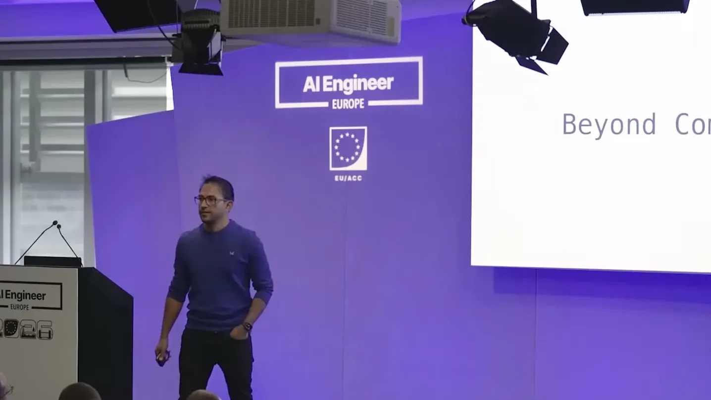
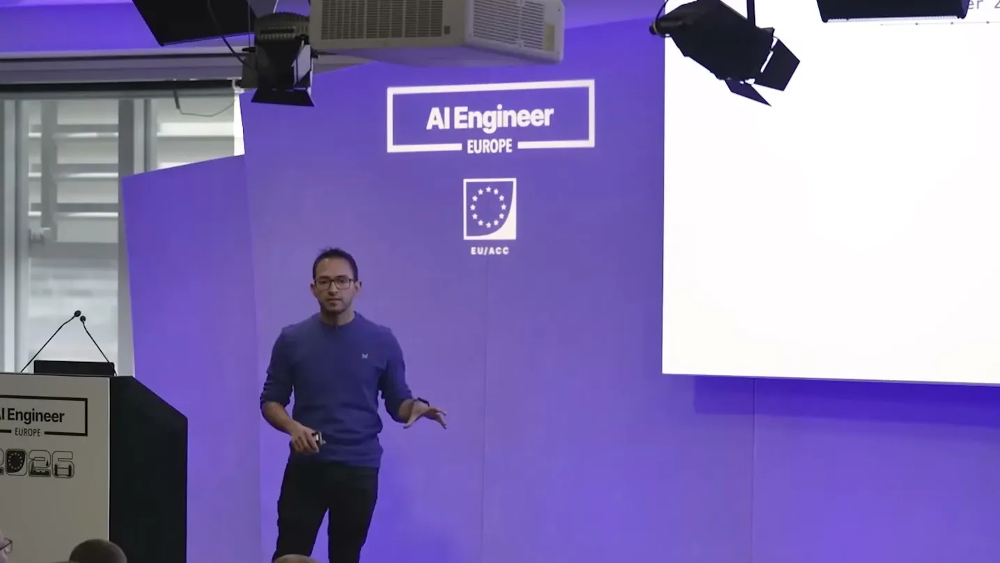
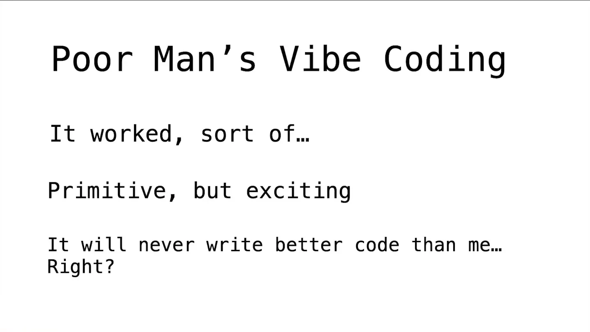
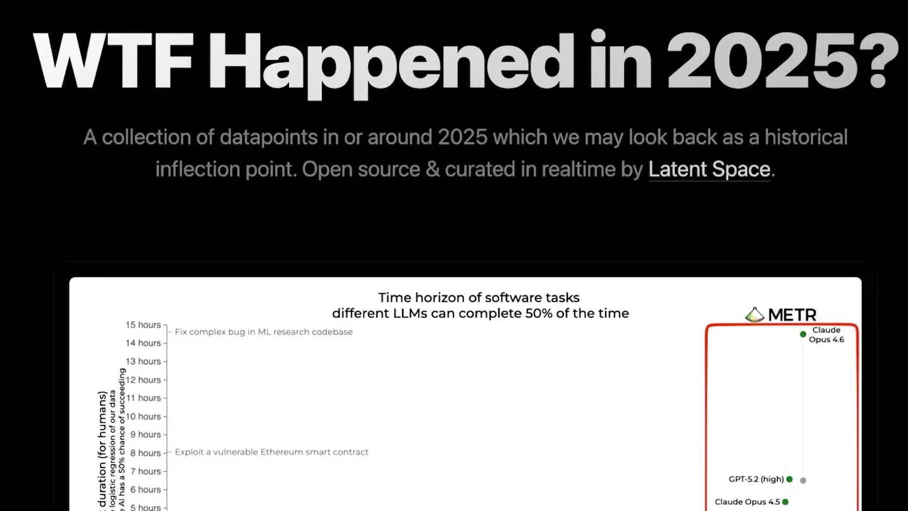
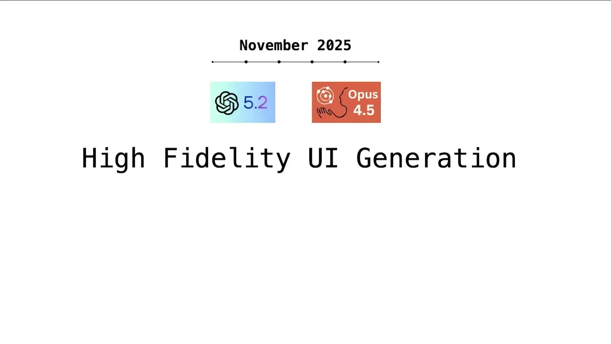
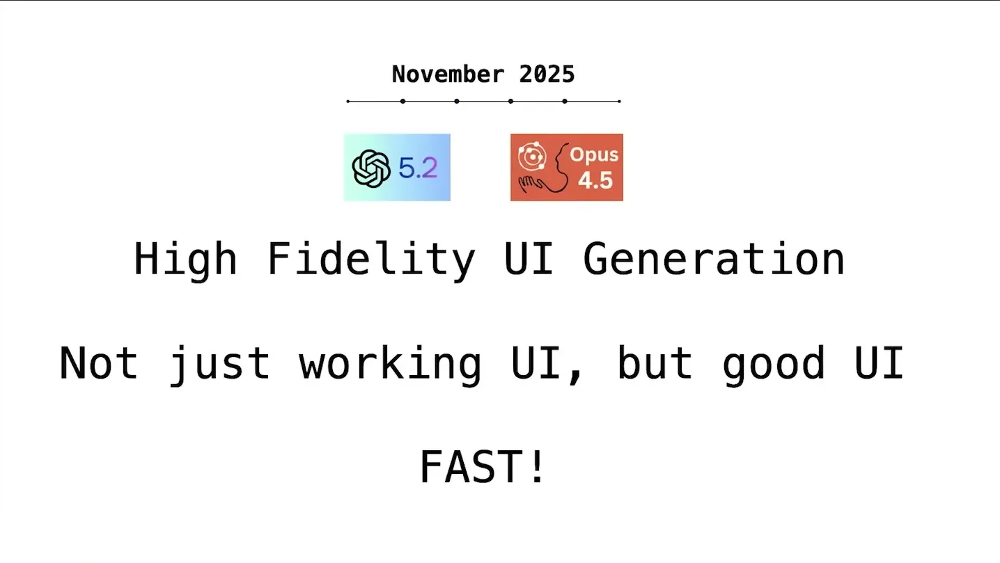
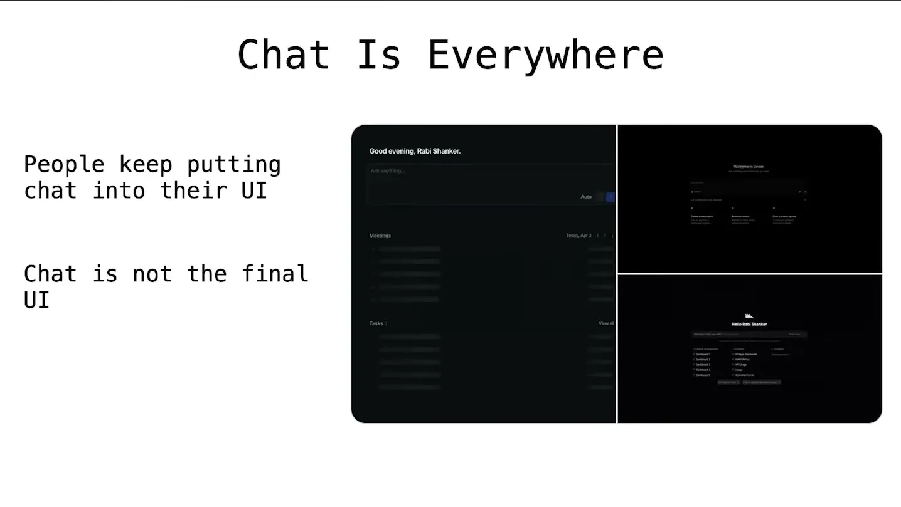
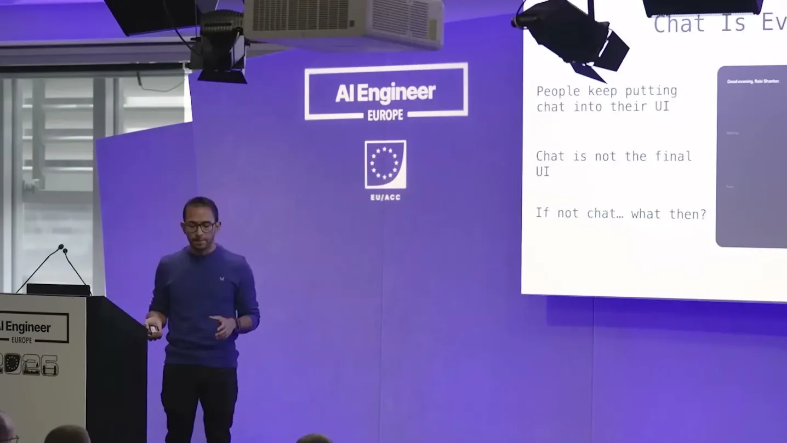
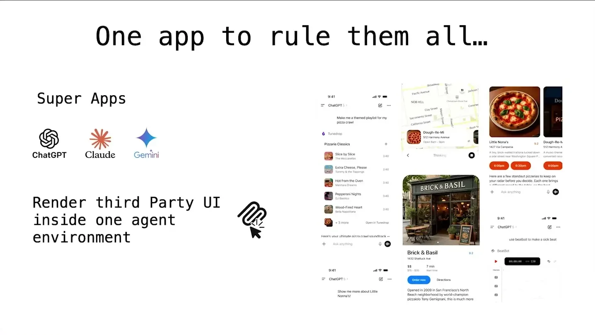
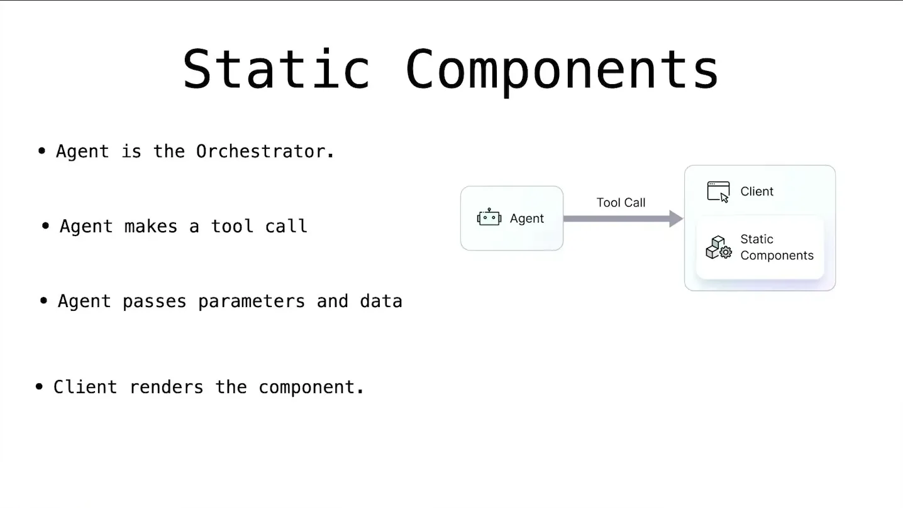
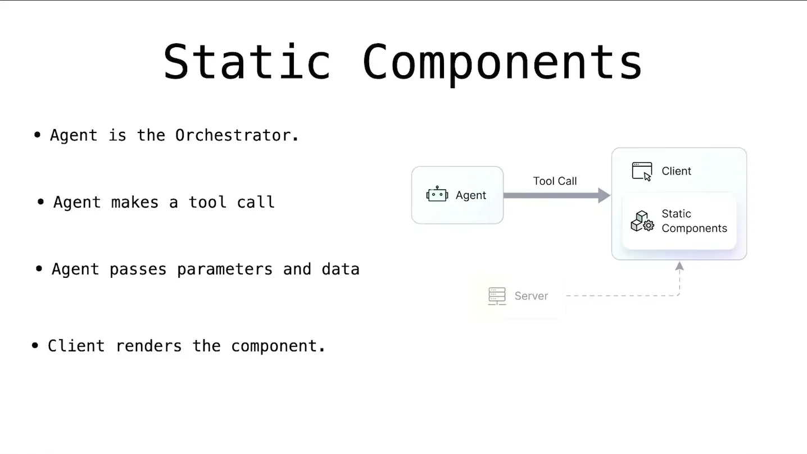
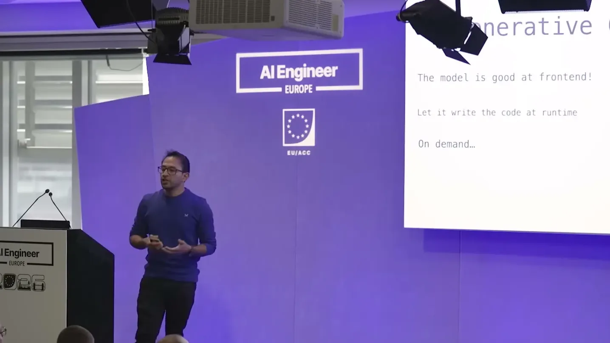
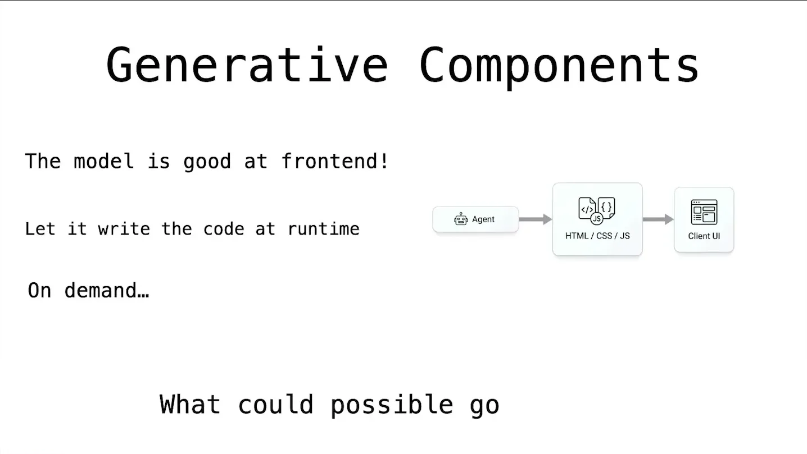
| Stance | Claim | t |
|---|---|---|
| asserts | GPT-5.2 and Opus 4.5 were the first models strong at both long-horizon tasks and high-fidelity UI generation. | 01:35 |
| asserts | AGUI's SDK lets developers register a client tool that maps directly to a React component, receiving props from the agent's tool call. | 06:50 |
| asserts | Vercel's JSON Render maps agent-generated JSON or YAML descriptors onto predefined static components. | 08:56 |
| asserts | The speaker's Postman weather agent demo generated a joke plus full HTML, CSS, and JavaScript UI in a single tool call, with no predefined components. | 11:03 |
| warns | LLM-generated UI code deserves the same distrust as arbitrary third-party code before being shown to a user. | 11:34 |
| asserts | MCP apps are sandboxed by default via a double iframe and are the current default mechanism for delivering third-party UI. | 12:04 |
| asserts | Anthropic chose to build its first-party visualizer feature on MCP apps rather than a proprietary rendering architecture. | 12:36 |
| asserts | The Excalidraw MCP app creates a shared canvas artifact where a human and an agent collaborate on the same UI. | 15:11 |
| predicts | The next stage of generative UI will be a personalized, collaborative human-agent experience rather than fixed components. | 15:42 |
| asserts | A single blog-rewrite prompt to a frontier model produced an unrequested search box with a blur animation and built-in accessibility. | 02:08 |
Machine-readable copy embedded in this page (script#ontology) and in the corpus ontology.